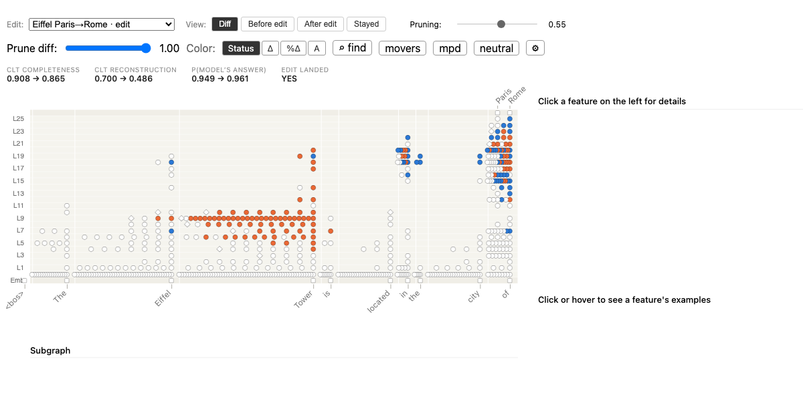

Note: this summary was AI-generated and will be updated shortly.
The problem
A cross-layer transcoder turns a language model's computation on a prompt into an attribution graph: a sparse circuit of features, with weighted edges running into the answer. The graph is a real object. You can inspect it, prune it, and intervene on it.
But its nodes are unlabeled. Reading a graph means cutting it down to the nodes that matter and then working out, one feature at a time, what each surviving node is for, usually by scrolling through the text that makes it fire. Every new prompt, every new question, starts that process over.
The idea
Instead of labeling the graph, change the model and watch what moves.
Take a fact the model knows, the Eiffel Tower is in Paris, and overwrite it with a low-rank factual edit so the model now says Rome. Build the attribution graph before and after, through the same transcoder, held frozen. Because the lens does not change, any difference between the two graphs is a difference in the model, not in the dictionary you are reading it through.
Features that were in the original graph and are gone from the edited one carried the old fact. Features new to the edited graph carry the new one. The diff is a ranked, testable list of where the fact lives.
How it works
- Edit the fact. Apply a MEMIT edit (Paris → Rome) to a copy of the model. The original is kept as it was.
- Build both graphs. Run the same prompt through both models with the same frozen CLT, giving the original graph A and the post-edit graph B. Node identities line up because the dictionary is identical.
- Find what appeared and disappeared. For every feature node, measure how far its activation moved from A to B on a normalized scale from −1 to 1. Nodes at −1 disappeared; nodes at +1 appeared.
- Calibrate against a null. Raw appeared/disappeared is too permissive: on the edited prompt most of the graph moves a little. So the method sets a floor from the edit's own neighborhood prompts, other subjects with the same relation whose answer the edit should not touch, and keeps only the nodes that moved more than that floor.
- Rank each side. Disappeared and appeared nodes are ranked separately, by how much their influence on the answer changed, weighted by how far they moved. The top of each list is read off the transcoder's released feature dashboards.
What comes out
The running example, on Gemma-2-2B through a 426k-feature CLT. These are the top features on each side, described by the text that makes them fire:
Disappeared
- 1promotes French tokens; fires on Grand Palais at Paris
- ·fires on Louvre Museum in Paris
- 5the French Revolution: the events of 1789
- 14French port cities: Havre / Lyons / Nice
Appeared
- 1fires on in Rome, Italy contexts
- 3Roman antiquity: Caesar / legion / Roman
- 4promotes Italy, sitting at the subject token itself
- 5Roman mythology: Romulus and Remus in 753
- 13the papacy: rival popes in Rome and Avignon
These are not detectors of the word Rome. They are the geography, history and associations around the old and new objects, and on this edit the subject representation itself now carries the new one. The same reading holds on other edits: moving the Taj Mahal's religion trades a Shah / Allah feature for Protestant / Christian / churches; moving the Pentium II from Intel to Microsoft trades Hyper-Threading enabled CPU for a feature that fires inside Transact-SQL documentation.
Does the lens survive the edit?
A fair worry: if the edit damages the transcoder's fit to the model, the diff could be reading noise. We measured. The damage is real and it lands exactly where the edit does. On edited prompts the graph's replacement score falls (median drop about 0.3) while the more lenient completeness score falls much less (about 0.06); on neighborhood prompts neither moves. Fine-tuning the transcoder on the edited model does not recover the fit, it stops at parity, so the frozen original is used throughout, which also keeps every feature readable on its released dashboard. This remains the method's central limitation, and the paper says so.
Is it causal?
The selected nodes are patched back into the unedited model. Appeared nodes are scored on whether installing them reproduces the edit, raising the Rome logit; disappeared nodes on whether suppressing them lowers the Paris logit. Each arm is compared against a count-matched baseline that ranks every node in the graph by its influence on the answer, and against a random draw of the same size.
Over 24 CounterFact edits, patching the top 5% set as a group: on the inject side it moves the target logit about twice as far as the influence baseline (9.98 versus 5.90 centered logits; 8.16 versus 4.94 under the null floor), and per-edit sign tests favor it on 9 to 11 of 12 edits at every depth. On the suppress side the two are comparable, and under the floor the baseline is ahead. Single nodes rarely move the logit alone, since a concept is split across several features, so the group result is the one that matters.
Limitations
- The method rests on two things it does not measure directly: that the edit landed, and that the transcoder still describes the edited model well enough to read.
- Without the null floor, “changed” covers 96% of the edited graph on the gained side and 48% on the lost side. The floor brings those to 14% and 3%, but its percentile has not been tuned systematically.
- On the suppress side, the advantage over simply reading off influence is small or absent.
- Circuit-Diff inherits whatever the transcoder basis gets wrong. It can only report movement among features the dictionary happens to represent.
- Knowledge editing has side effects. Any side effect shows up in the diff as movement that is not the fact, which is why recurrence across edits is worth checking.
Try it
The demo is the Eiffel Tower edit above, in a forked attribution-graph viewer: orange is appeared, blue is disappeared, gray is unchanged, with the ranked movers list and the feature dashboards wired in.

The library is open source on GitHub and pip-installable, and a precomputed bundle for this edit ships with it, so the viewer runs with no GPU and no model download:
pip install circuit-diff cs load circuit_diff/examples/bundles/eiffel --serve
Loading, viewing and ranking a bundle needs only pandas. Building new graphs and running the causal patching needs a GPU and circuit-tracer. Two further tools ship alongside: multi-prompt aggregation, and rule-based grouping of features into supernodes. The summary tables behind every figure in the paper are released as a dataset on Hugging Face.